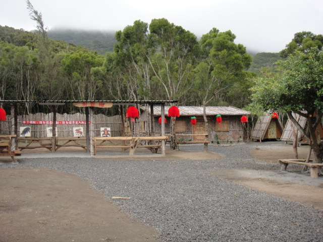

獵人的屋體驗園區
獵人體驗園區位於景觀秀麗、鬼斧天工的四林格山區， 佔地2分多；園區設有介紹早期原民狩獵方法的獵人教室，及使用原始弓箭（榕 樹藤、竹子製成）的射箭場，還有可體驗早期原民烤著炭火、喝著小米酒睡在 竹筏上的山中生活的小木屋住宿區等。
資訊取自: https://www.pthg.gov.tw/townmdt/cp.aspx?n=C560EE38051591AE
照片取自:牡丹鄉公所